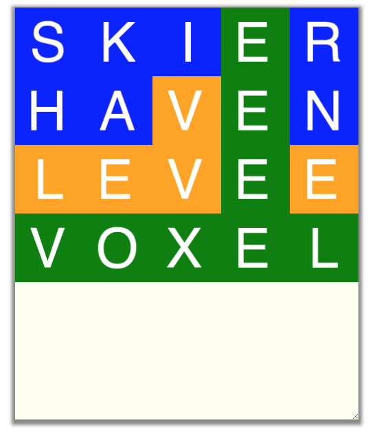

Wordle Bot
Goals
The assignment is a variation of the popular Wordle game, but you are writing
the game's logic to find the solution given random guesses from a dictionary of words.
With each guess, your solution will whittle down the set of possible solutions. You should
be able to see the solution in at most 6 tries or so (though there are cases it wont find
it in 6 tries!)
This assignment will exercise and reinforce your knowledge of
- Control structures (loops, conditionals)
- Using and manipulating strings
- Using list, array or set as a data structure
- File I/O
Programming
The assignment uses the BRIDGES Game API, so use the provided scaffold and fill in
the functions as indicated. The user interaction is to use a key to enter a new word and it
will show up with colors as in a typical word game, exact matches (green), matches in
wrong positions (orange) and mismatches (blue)
Tasks
- Read in the 5 word dictionary (provided)
- Do the intializations, set up data structures that are needed, draw the board
- Get a goal (answer word) - picked at random from the dictionary
- Use a key press event to generat new guesses (words) - words picked at random from
the dictionary
- Check if the new word matched the answer - if yes quit, else continue
- If not done, compare the guessed word to the answer - 3 cases to be used to whittle down
the dictionary to a remaining set of potential solution candidates; do the following
for each character in the guessed word
- If the character in answer matches the character in guess at same position,
then remove all words that do not have this character in that position
- If the character exists in the answer, then remove all words in dictionary
that do not have this character
- This character is not in the answer - remove all words in dictionary with this
character
- update the board
- Write the cull function to remove words that cannot be the answer -- back into the loop
- Repeat the above until the max attempts is reached or the answer is found, whichever
comes first

More Details to Get You Started
Key Press Events - NonBlocking Games
- keyFire() // for entering a new word
Variables, Colors, and Sprite Symbols
- NamedSymbol.symbolname;
- NamedColor.colorname;
- drawSymbol(column, row, NamedSymbol, NamedColor);
- setBGColor(column, row, NamedColor);
Important Functions
- The gameLoop() function loops until the win condition has been met (or there is a tie).
- quit() stops the game
- start() starts the game and calls the initalize function once before starting the gameLoop()
Help
Java
NonBlocking Games Documentation
NamedColor Documentation
NamedSymbol Documentation
C++
NonBlocking Games Documentation
NamedColor Documentation
NamedSymbol Documentation
Python
NonBlocking Games Documentation
NamedColor Documentation
NamedSymbol Documentation